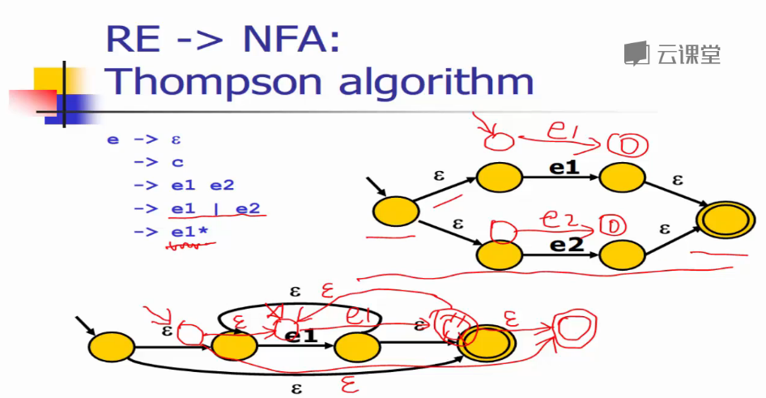

词法分析器Part2
2017-3-24 15:52:34 by 郭某某
※第一讲：RE转换成NFA：Thompson算法※
RE->NFA->DFA->词法分析器代码
·····1········2·········3···························
1.Thompson算法
2.子集构造算法
3.Hopcroft最小化算法
声明式的规范（如：RE正则表达式）
Thompson算法：
数学归纳法
直接构造：
e->""
e->c
递归构造：
e->e1e2
e->e1|e2
e->e1*

先括号
再闭包
再连接
再选择
※第二讲：NFA转换成DFA：子集构造算法※
RE->NFA->DFA->词法分析器代码
这一讲主要讨论子集构造算法 NFA->DFA
大量的数学公式、数据结构、算法
算法思想：
a(b|c)*

不动点算法
·算法为什么能够运行终止？
答：若干集合组合，
Q={{...},{...},{...},{...},...}
Q总会被填满，上限为2^N
时间复杂度
最坏情况O(2^N)
但在实际中不经常发生，因为并不是每个子集都会出现在Q中。
举例：
算法(基于深度优先)：
子集构造算法会产生工作表，因此也叫工作表算法。
※第三讲：DFA的最小化：Hopcroft最小化算法※
RE->NFA->DFA->词法分析器代码
这一讲主要讨论Hopcroft最小化算法 DFA->词法分析器代码
算法思想
相似条件结合
Hopcroft算法
※第四讲：从DFA生成分析算法※
RE->NFA->DFA->词法分析器代码
这一讲主要讨论从DFA生成分析算法
生成数据结构
概念上讲，DFA是一个有向图
实际上，有不同的DFA的代码表示：
转移表（类似于邻接矩阵）
哈希表
跳转表
。。。
取决于在实际实现中，对时间空间的权衡
&转移表&

&跳转表&
跳转表：效率高
按实际场景需求确定
以上内容学习自网易云课堂鸣谢！